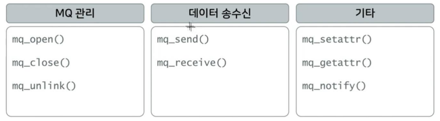
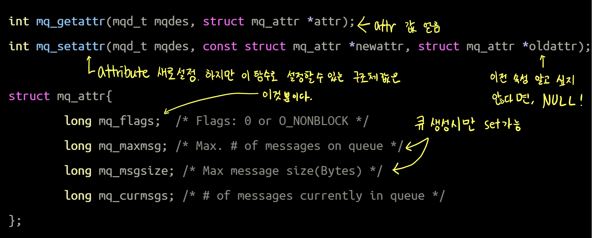
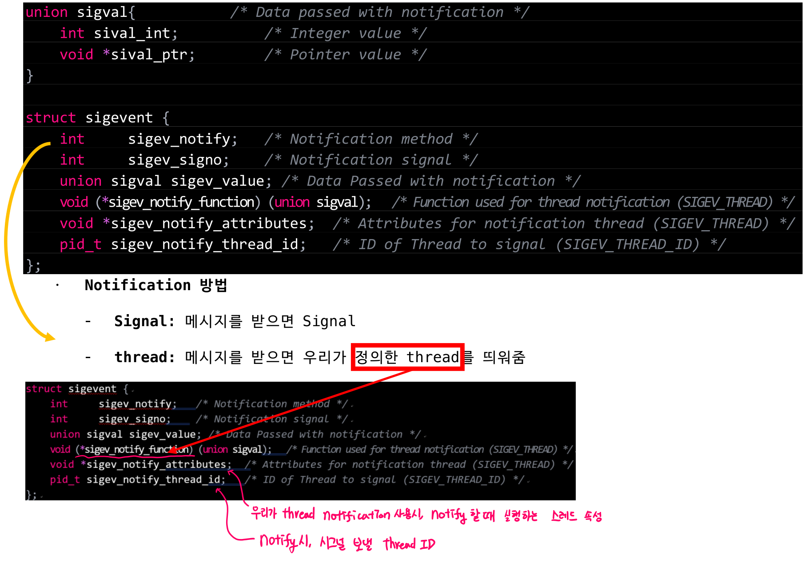
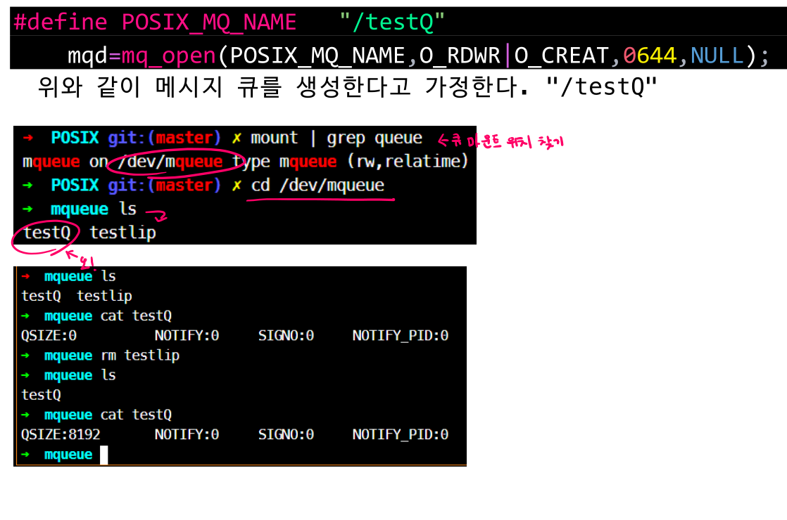
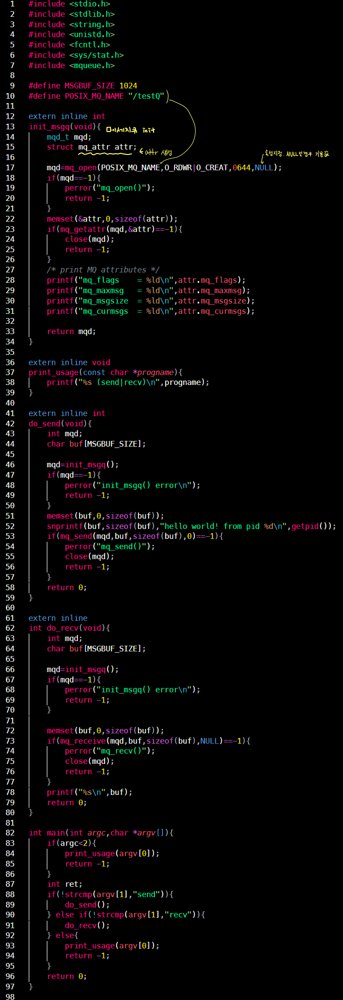
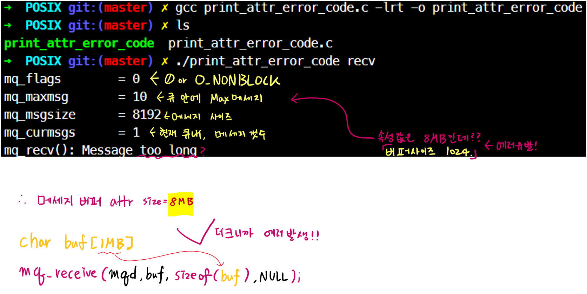
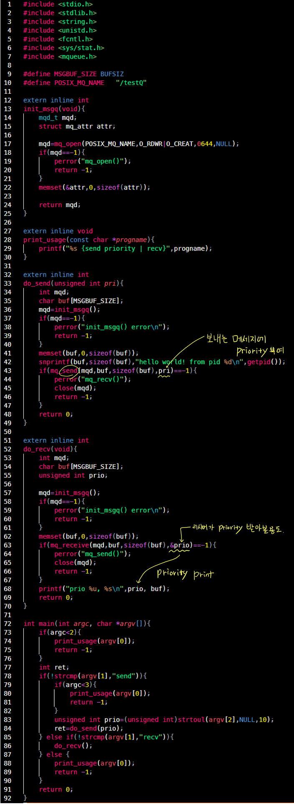
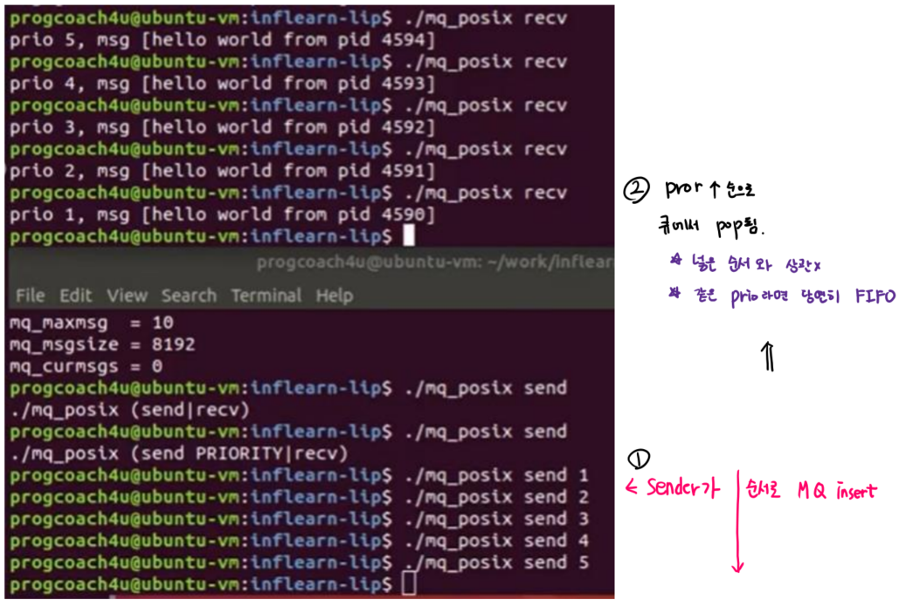

Message Queue - POSIX
2 minute read
Message Queue POSIX
Feature
POSIX MQ API

mq_open() - MQ를 생성하거나 열기
#include <fcntl.h>
#include <sys/stat.h>
#include <mqueue.h>
mqd_t mq_open(const char *name, int oflag); // MQ 열기(큐가 존재할 경우 oflag에 O_CREAT (X))
mqd_t mq_open(const char *name, int oflag, mode_t mode, struct mq_attr *attr);
- 기능: POSIX MQ를 열거나 생성 후 열기
| return |
value |
| 성공 |
MQ descriptor |
| 실패 |
-1 |
| parameter |
option |
description |
| *name |
MQ이름 |
ex) “/tmp/testmq” 반드시 ‘/’로 시작해야 한다 |
| oflg |
O_RDONLY |
MQ를 receive only로 open |
| - |
O_WRONLY |
MQ를 send only로 open |
| - |
O_RDWR |
MQ를 receive & send 가능하게 open |
| - |
O_CLOEXEC |
close-on-exec Set. open(2) man을 보면 왜 유용한지 알 수 있음
이 옵션부터 아래로, ‘|’ 로 다중 사용 가능 |
| - |
O_EXCL |
O_CREAT가 set 되어 있고, *name의 queue가 이미 존재한다면, EEXIST 에러 |
| - |
O_NONBLOCK |
큐를 Non-Blocking으로 Open |
| mode |
permission |
- |
| attr |
속성 지정 |
NULL일 경우 기본 값 설정, 자세한 건 아래! |
attribute

| parameter |
description |
| mqdes |
메시지 큐 디스크립터 |
| attr |
attribute |
mq_receive() - 메시지 수신
ssize_t mq_receive(mqd_t mqdes, char *msg_ptr, size_t msg_len, unsigned int *msg_prio);
| return |
value |
| 성공 |
읽은 바이트 수 리턴 |
| 실패 |
-1 |
| parameter |
description |
| mqdes |
메시지 큐 디스크립터 |
| *msg_ptr |
전송받은 것을 담을 포인터(받을 버퍼) |
| msg_len |
전송받은 길이 (반드시 attr.mq_msgsize 보다 크거나 같아야함) |
| *msg_prio |
받은 우선순위 기록할 ptr |
mq_close()
int mq_close(mdq_t mqdes);
- 기능: 메시지 큐 닫기(삭제는
mq_unlink())
| parameter |
description |
| mqdes |
메세지 큐 Descriptor |
mq_unlink()
int mq_unlink(const char *name);
| parameter |
description |
| *name |
메세지 큐 Descriptor Name |
mq_send()
int mq_send(mqd_t mqdes,const char *msg_ptr, size_t msg_len, unsigned int msg_prio);
| parameter |
description |
| mqdes |
메세지 큐 Descriptor |
| *msg_ptr |
전송할 포인터(전송 버퍼) |
| msg_len |
전송 길이 |
| msg_prio |
우선 순위(0:lowest ~ 32768:highest) |
mq_notify()
int mq_notify(mqd_t mqdes, const struct sigevent *sevp);
| parameter |
description |
| mqdes |
메세지 큐 Descriptor |
| sevp |
notification 설정 |
sigevent struct

POSIX MQ 제어
- SysV는 ipcs, ipcrm 등으로 제어 가능
- POSIX MQ는 가상 파일 시스템으로 컨트롤 한다.

ex.1 attr 확인

$ gcc print_attr_error_code.c -lrt -o print_attr_error_code
$ ./print_attr_error_code
# Error 발생

ex2. Priority 메세지 주고 받기
- msgq_priority.c
- Priority는 메세지 줄 때 set!!


- sender가 1,2,3,4,5 순으로 send
- recv는 Priority가 높은(숫자가 높은)것 부터 Pop!
- 넣은 순서랑 상관 없이, 큐에 5개가 들어가 있다면, Priority 높은 것 부터 Pop!
- 같은 priority만 있다면, 당연히 FIFO